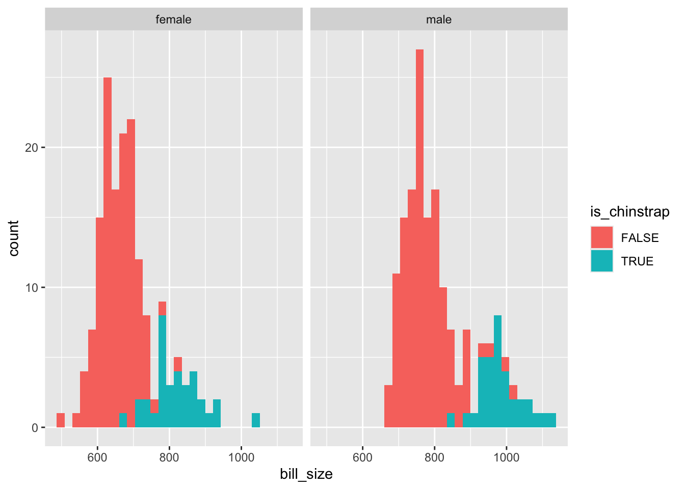

Code
llogit <- function(par, y, X){
xform <- function(z) {1 / (1 + exp(-z))}
p <- xform(X%*%par)
sum(y * log(p) + (1-y) * log(1 - p))
}Within this series, parts 1-4 formed what we might call ‘section one’, and part 5-9 ‘section two’.
Section one (re)introduced statistical models as siblings, children of a mother model which combines a systematic component (an equation with a \(=\) symbol in it) and a stochastic component (an equation with a \(\sim\) in it, which can largely be read as ‘drawn from’). Part one provided a graphical representation of the challenge of model fitting from an algorithmic perspective, in which the parameters that go into the two component are tweaked and tweaked until some condition is met: usually that the discrepency between model predictions and observed outcomes are minimised some way. The two component mother model is largely equivalent to the concept of the generalised linear model: parts two and three explored this association a bit more. Part four demonstrated how, for statistical models other than standard linear regression, the kinds of answer one usually wants from a model are not readily apparent from the model coefficients themselves, and so careful use of model predictions, and calibration of the questions, are required to use models to answer substantivelly meaningful questions.
Section two aimed to show how likelihood theory is used in practice in order to justify a loss function that algorithms can be used to try to ‘solve’.1 These loss functions and optimisation algorithms are usually called implicitly by statistical model functions, but we did things the hard way by building the loss function from scratch, and evoking the algorithms more directly, using R’s optim() function. As well as the pedagogical value (and bragging rights) of being able to create and fit statistical models directly, an additional benefit of using optim() (with some of its algorithms) is that it returns something called the Hessian. The Hessian is what allows us to be honest when making model predictions and projections, showing how our uncertainty about the true value of the model parameters (the multiple inputs that optim() algorithms try to tweak until they’re good enough) leads to uncertainty in what we’re predicting and projecting.
Unfortunately, we’re still in section two. The material below aims to repeat the same kind of exercise performed for standard linear regression, but using logistic regression instead.
Previously we focused on the log likelihood for standard linear regression. Let’s now do the same for logistic regression. According to the relevant section of the Zelig website:
Stochastic component \[ Y_i \sim Bernoulli(y_i | \pi_i ) \]
\[ Y_i = \pi_i^{y_i}(1 - \pi_i)^{1-y_i} \]
where \(\pi_i = P(Y_i = 1)\)
And
Systematic Component
\[ \pi_i = \frac{1}{1 + \exp{(-x_i \beta)}} \]
The likelihood is the product of the above for all observations in the dataset \(i \in N\)
\[ L(.) = \prod{\pi_i^{y_i}(1 - \pi_i)^{1-y_i}} \]
The effect of logging the above2:
\[ \log{L(.)} = \sum{[y_i \log{\pi_i} + (1-y_i)\log{(1-y_i)}]} \]
This can now be implemented as a function:
llogit <- function(par, y, X){
xform <- function(z) {1 / (1 + exp(-z))}
p <- xform(X%*%par)
sum(y * log(p) + (1-y) * log(1 - p))
}Let’s pick an appropriate dataset. How about… picking a Palmer Penguin!?
library(tidyverse)
palmerpenguins::penguins# A tibble: 344 × 8
species island bill_length_mm bill_depth_mm flipper_length_mm body_mass_g
<fct> <fct> <dbl> <dbl> <int> <int>
1 Adelie Torgersen 39.1 18.7 181 3750
2 Adelie Torgersen 39.5 17.4 186 3800
3 Adelie Torgersen 40.3 18 195 3250
4 Adelie Torgersen NA NA NA NA
5 Adelie Torgersen 36.7 19.3 193 3450
6 Adelie Torgersen 39.3 20.6 190 3650
7 Adelie Torgersen 38.9 17.8 181 3625
8 Adelie Torgersen 39.2 19.6 195 4675
9 Adelie Torgersen 34.1 18.1 193 3475
10 Adelie Torgersen 42 20.2 190 4250
# ℹ 334 more rows
# ℹ 2 more variables: sex <fct>, year <int>Let’s say we want to predict whether a penguin is of the Chinstrap species
palmerpenguins::penguins %>%
filter(complete.cases(.)) |>
mutate(is_chinstrap = species == "Chinstrap") |>
ggplot(aes(x = bill_length_mm, y = bill_depth_mm, colour = is_chinstrap, shape = sex)) +
geom_point()
Neither bill length nor bill depth alone appears to distinguish between chinstrap and other species. But perhaps the interaction (product) of the two terms would do:
palmerpenguins::penguins %>%
filter(complete.cases(.)) |>
mutate(is_chinstrap = species == "Chinstrap") |>
mutate(bill_size = bill_length_mm * bill_depth_mm) |>
ggplot(aes(x = bill_size, fill = is_chinstrap)) +
facet_wrap(~sex) +
geom_histogram()
The interaction term isn’t great at separating the two classes, but seems to be better than either length or size alone. So I’ll include it in the model.
df <- palmerpenguins::penguins %>%
filter(complete.cases(.)) |>
mutate(is_chinstrap = species == "Chinstrap") |>
mutate(bill_size = bill_length_mm * bill_depth_mm) |>
mutate(is_male = as.numeric(sex == "male"))
y <- df$is_chinstrap
X <- cbind(1, df[,c("bill_length_mm", "bill_depth_mm", "bill_size", "is_male")]) |>
as.matrix()So, including the intercept term, our predictor matrix \(X\) contains 5 columns, including the interaction term bill_size. 3
Let’s try now to use the above in optim()
fuller_optim_output <- optim(
par = rep(0, 5),
fn = llogit,
method = "BFGS",
control = list(fnscale = -1),
hessian = TRUE,
y = y,
X = X
)
fuller_optim_output$par
[1] 82.9075239 -2.4368673 -6.4311531 0.1787047 -6.4900678
$value
[1] -33.31473
$counts
function gradient
137 45
$convergence
[1] 0
$message
NULL
$hessian
[,1] [,2] [,3] [,4] [,5]
[1,] -12.103063 -550.0621 -209.30944 -9674.925 -3.700623
[2,] -550.062097 -25256.3082 -9500.55848 -443670.225 -184.360139
[3,] -209.309443 -9500.5585 -3650.65107 -168517.417 -68.158844
[4,] -9674.924703 -443670.2251 -168517.41718 -7846293.352 -3464.964868
[5,] -3.700623 -184.3601 -68.15884 -3464.965 -3.700623hess <- fuller_optim_output$hessian
inv_hess <- solve(-hess)
inv_hess [,1] [,2] [,3] [,4] [,5]
[1,] 41.95816335 -0.156192235 -0.309892876 -4.036895e-02 9.329019450
[2,] -0.15619224 -0.005017392 -0.024806420 1.070652e-03 -0.139430425
[3,] -0.30989288 -0.024806420 -0.042869947 2.854565e-03 -0.337480429
[4,] -0.04036895 0.001070652 0.002854565 -7.331214e-05 0.003098092
[5,] 9.32901945 -0.139430425 -0.337480429 3.098092e-03 1.202424836Now let’s compare with glm()
mod_glm <- glm(is_chinstrap ~ bill_length_mm * bill_depth_mm +is_male, data = df,
family = binomial())
summary(mod_glm)
Call:
glm(formula = is_chinstrap ~ bill_length_mm * bill_depth_mm +
is_male, family = binomial(), data = df)
Coefficients:
Estimate Std. Error z value Pr(>|z|)
(Intercept) 365.2924 88.3341 4.135 3.54e-05 ***
bill_length_mm -8.9312 2.0713 -4.312 1.62e-05 ***
bill_depth_mm -23.6184 5.5003 -4.294 1.75e-05 ***
is_male -11.8725 2.6121 -4.545 5.49e-06 ***
bill_length_mm:bill_depth_mm 0.5752 0.1292 4.452 8.53e-06 ***
---
Signif. codes: 0 '***' 0.001 '**' 0.01 '*' 0.05 '.' 0.1 ' ' 1
(Dispersion parameter for binomial family taken to be 1)
Null deviance: 337.113 on 332 degrees of freedom
Residual deviance: 49.746 on 328 degrees of freedom
AIC: 59.746
Number of Fisher Scoring iterations: 9Uh oh! On this occasion it appears one or both approaches have become confused. A five dimensional search space might be too much for the algorithms to cope with, especially with collinearity 4 between some of the terms. Let’s simplify the task a bit, and just use intercept, bill size, and is_male as covariates. First with the standard package:
mod_glm_simpler <- glm(is_chinstrap ~ bill_size +is_male, data = df,
family = binomial())
summary(mod_glm_simpler)
Call:
glm(formula = is_chinstrap ~ bill_size + is_male, family = binomial(),
data = df)
Coefficients:
Estimate Std. Error z value Pr(>|z|)
(Intercept) -32.815339 4.325143 -7.587 3.27e-14 ***
bill_size 0.043433 0.005869 7.400 1.36e-13 ***
is_male -7.038215 1.207740 -5.828 5.62e-09 ***
---
Signif. codes: 0 '***' 0.001 '**' 0.01 '*' 0.05 '.' 0.1 ' ' 1
(Dispersion parameter for binomial family taken to be 1)
Null deviance: 337.11 on 332 degrees of freedom
Residual deviance: 90.60 on 330 degrees of freedom
AIC: 96.6
Number of Fisher Scoring iterations: 7And now with the bespoke function and optim
X <- cbind(1, df[,c("bill_size", "is_male")]) |>
as.matrix()
fuller_optim_output <- optim(
par = rep(0, 3),
fn = llogit,
method = "BFGS",
control = list(fnscale = -1),
hessian = TRUE,
y = y,
X = X
)
fuller_optim_output$par
[1] -32.60343219 0.04314546 -6.98585077
$value
[1] -45.30114
$counts
function gradient
73 18
$convergence
[1] 0
$message
NULL
$hessian
[,1] [,2] [,3]
[1,] -13.008605 -10662.078 -5.201308
[2,] -10662.078251 -8846787.584 -4846.390833
[3,] -5.201308 -4846.391 -5.201308hess <- fuller_optim_output$hessian
inv_hess <- solve(-hess)
inv_hess [,1] [,2] [,3]
[1,] -536.7022079 0.7206703142 -134.7923170
[2,] 0.7206703 -0.0009674672 0.1807806
[3,] -134.7923170 0.1807806218 -33.4602664The estimates from the two approaches are now much closer, even if they aren’t as close to each other as in the earlier examples. Using optim(), we have parameter estimates \(\beta = \{\beta_0 = -32.60, \beta_1 = 0.04, \beta_2 = -6.99\}\), and using glm(), we have estimates \(\beta = \{\beta_0 = -32.82, \beta_1 = 0.04, \beta_2 = -7.04 \}\)
If we cheat a bit, and give the five dimensional version starting values closer to the estimates from glm(), we can probably get similar estimates too.
X <- cbind(1, df[,c("bill_length_mm", "bill_depth_mm", "bill_size", "is_male")]) |>
as.matrix()
fuller_optim_output <- optim(
par = c(300, -10, -29, 0.5, -10),
fn = llogit,
method = "BFGS",
control = list(fnscale = -1),
hessian = TRUE,
y = y,
X = X
)
fuller_optim_output$par
[1] 299.5512512 -7.3684567 -19.3951742 0.4747209 -9.7521255
$value
[1] -25.33208
$counts
function gradient
153 22
$convergence
[1] 0
$message
NULL
$hessian
[,1] [,2] [,3] [,4] [,5]
[1,] -8.378918 -370.41592 -140.86865 -6342.301 -1.800406
[2,] -370.415921 -16580.87909 -6238.75358 -284403.350 -91.239716
[3,] -140.868648 -6238.75358 -2387.19776 -107598.410 -33.018551
[4,] -6342.300809 -284403.34960 -107598.40987 -4906697.476 -1685.235507
[5,] -1.800406 -91.23972 -33.01855 -1685.236 -1.800406hess <- fuller_optim_output$hessian
inv_hess <- solve(-hess)
inv_hess [,1] [,2] [,3] [,4] [,5]
[1,] -59.5448267 2.316365876 5.14842594 -0.1737609491 10.383684649
[2,] 2.3163659 -0.064512887 -0.16844980 0.0044962968 -0.166413655
[3,] 5.1484259 -0.168449797 -0.33888931 0.0106735535 -0.387558164
[4,] -0.1737609 0.004496297 0.01067355 -0.0002712683 0.004068597
[5,] 10.3836846 -0.166413655 -0.38755816 0.0040685965 1.904433768Well, they are closer, but they aren’t very close. As mentioned, the glm() model produced warnings, and some of the variables are likely to be collinear, so this initial specification may have been especially difficult to fit. Both approaches found an answer, but neither seem happy about it!
In the exercise above we did for logistic regression what the previous few posts in section two did for standard regression: i.e. we derived the log likelihood, applied it using optim, and compared with results from the glm() package. We saw in this case that fitting models isn’t always straightforward. We were - well, I was - overly ambitious in building and applying an overly parameterised model specification. But we eventually got to similar parameter values using both approaches.
Though this wasn’t as straightforward as I was hoping for, I’m presenting it warts-and-all. In principle, the log-likelihood maximisation approach generalises to a great many model specifications, even if in practice some model structures aren’t as straightforward to fit as others.
In the next post, I’ll finally be moving off ‘section two’, with its algebra and algorithms, and showing some tools that can be used to make honest prediction and projections with models, but without all the efforts undertaken here and in the last few posts.
By ‘loss function’ I mean a function that takes one or more numeric inputs and returns a single numeric output. The aim of the algorithm is to find the combination of inputs that minimises (or maximises) the function’s output.↩︎
Thanks to this post. My calculus is a bit rusty these days.↩︎
An important point to note is that, though bill_size is derived from other variables, it’s its own variable, and so has another distinct ‘slot’ in the vector of \(\beta\) parameters. It’s just another dimension in the search space for optim to search through.↩︎
This is fancy-speak for when two terms aren’t independent, or both adding unique information. For example, length in mm, length in cm, and length in inches would all be perfectly collinear, so shouldn’t all be included in the model.↩︎